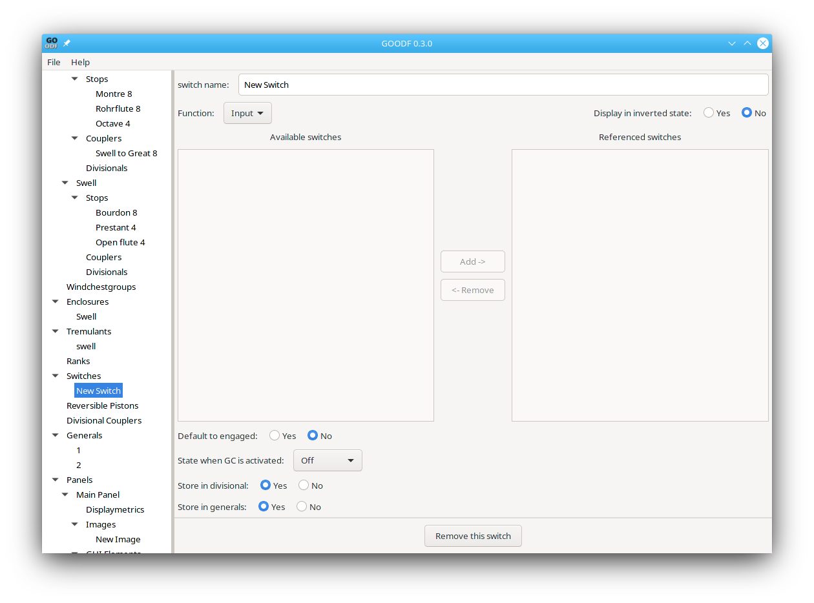

Switches are Objects that ,like stops, can have graphical drawstop
GUI elements. However they do not reference ranks, but instead are
used to control stops, couplers, and tremulants using combinational
logic. Switches in turn can be controller by other switches using its
Function parameter and
referencing available switches as explained in Stops.

Display in inverted state (Boolean, default: false) If true, off is displayed as on and on as off.
Default to engaged (Boolean, required) State of the button after loading the organ into GrandOrgue
State when GC activated ( default: implementation defined) State of the button after pressing GC. - no change, off or on.
Store in divisional (Boolean, default: dependent on various settings) Determines, if the button should be stored in divisionals without FULL. (see GrandOrgue help for FULL discussion)
Store in generals (Boolean, default: dependent on various settings) Determines, if the button should be stored in generals without FULL.